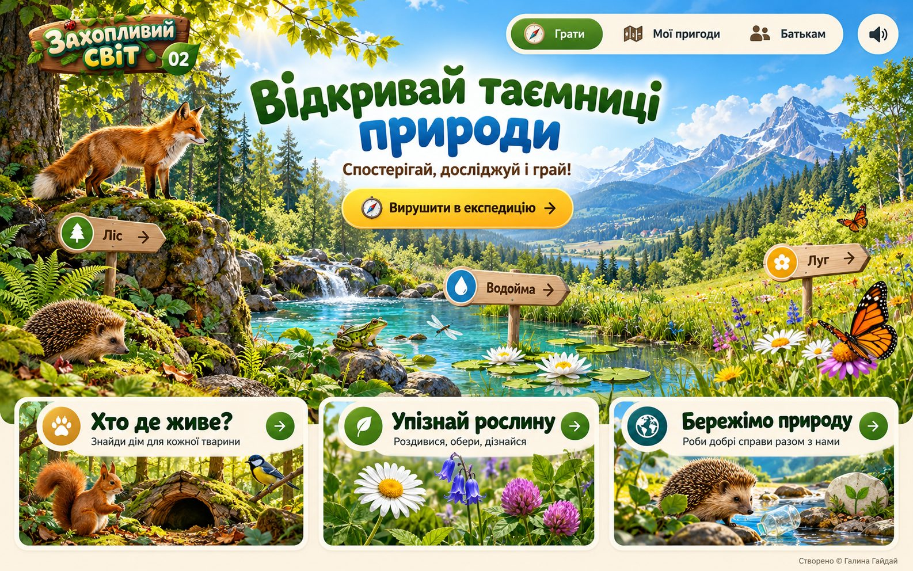

<!DOCTYPE html>
<html lang="uk">
<head>
<meta charset="utf-8">
<meta name="viewport" content="width=device-width, initial-scale=1, viewport-fit=cover">
<meta name="description" content="Захопливий світ — інтерактивна платформа «Я досліджую світ» для 1–4 класів. Автор: Галина Гайдай">
<link rel="icon" href="fox.jpg">
<style>:root{padding-top:env(safe-area-inset-top,0px);padding-bottom:env(safe-area-inset-bottom,0px)}body{margin:0}img{max-width:100%}[hidden]{display:none!important}</style>
<title>Захопливий світ</title>
<link rel="preconnect" href="https://fonts.googleapis.com">
<link rel="stylesheet" href="https://fonts.googleapis.com/css2?family=Rubik:wght@500;700;800&family=Nunito:wght@500;700;800&family=Pangolin&display=swap">
<style>
/* Layout: the painted nature scene is the home screen itself (hotspots on its signs and cards);
   inner pages sit on a blurred copy of the same scene, content on wooden-sign and paper panels. */
:root{
  --forest:#1e6a2c; --forest-deep:#134a1e; --leaf:#4f9a2f;
  --sky:#1f56b4; --water:#1a8fb8;
  --sun:#f6bd16; --sun-deep:#e19a00;
  --clover:#b8338a;
  --wood:#b98251; --wood-deep:#8a5a30; --wood-light:#e9c99b;
  --paper:#fffaf0; --paper-2:#f6edd8;
  --ink:#1f2b1c; --ink-soft:#4a5a44;
  --good:#2f9e44; --bad:#d9480f;
  --shadow:0 10px 28px rgba(31,43,28,.18);
  --f-display:"Rubik","Nunito",system-ui,sans-serif;
  --f-body:"Nunito",system-ui,-apple-system,"Segoe UI",sans-serif;
  --f-hand:"Pangolin","Nunito",cursive;
  color-scheme:light;
}
*{box-sizing:border-box}
html,body{background:var(--paper-2);color:var(--ink)}
body{font-family:var(--f-body);font-size:17px;line-height:1.5;-webkit-tap-highlight-color:transparent;overflow-x:hidden}
button{font:inherit;color:inherit;cursor:pointer}
:focus-visible{outline:3px solid var(--sky);outline-offset:3px;border-radius:10px}
h1,h2,h3{font-family:var(--f-display);line-height:1.12;text-wrap:balance;margin:0}
p{margin:0}

/* backdrop for inner pages */
.backdrop{position:fixed;inset:-30px;z-index:-1;background:url(bg-small.jpg) center/cover;filter:blur(14px) saturate(1.15);transform:scale(1.05)}
.backdrop::after{content:"";position:absolute;inset:0;background:linear-gradient(180deg,rgba(255,250,240,.55),rgba(246,237,216,.88) 40%)}

.wrap{max-width:1200px;margin:0 auto;padding-left:max(16px,env(safe-area-inset-left,0px));padding-right:max(16px,env(safe-area-inset-right,0px))}

/* ---------- HERO ---------- */
.hero{padding-block:16px 8px}
.stage-frame{border-radius:26px;overflow:hidden;box-shadow:0 18px 50px rgba(19,74,30,.28);background:var(--forest-deep)}
.stage{position:relative;aspect-ratio:1586/992;max-width:100%;transform-origin:50% 60%;transition:transform .6s cubic-bezier(.2,.7,.2,1)}
.stage img.scene{position:absolute;inset:0;width:100%;height:100%;display:block;user-select:none;-webkit-user-drag:none}
.stage canvas{position:absolute;inset:0;width:100%;height:100%;pointer-events:none}
.sunglow{position:absolute;left:24%;top:-12%;width:24%;aspect-ratio:1;border-radius:50%;background:radial-gradient(circle,rgba(255,250,210,.75),rgba(255,240,170,0) 65%);mix-blend-mode:screen;pointer-events:none;animation:sun 6s ease-in-out infinite}
@keyframes sun{50%{transform:scale(1.18);opacity:.75}}
.hot{position:absolute;border:0;background:transparent;border-radius:999px;padding:0;transition:box-shadow .25s,background .25s,transform .25s}
.hot:hover,.hot:focus-visible{background:rgba(255,255,255,.14);box-shadow:0 0 0 3px rgba(255,255,255,.85),0 0 26px 6px rgba(255,236,150,.85);transform:translateY(-2px)}
.hot.card{border-radius:18px}
.hot.card:hover,.hot.card:focus-visible{background:rgba(255,255,255,.06);transform:translateY(-4px)}
.hot.cta{animation:ctaPulse 2.4s ease-in-out infinite}
@keyframes ctaPulse{0%,100%{box-shadow:0 0 0 0 rgba(246,189,22,.0)}50%{box-shadow:0 0 0 6px rgba(255,255,255,.55),0 0 34px 10px rgba(246,189,22,.75)}}
.hot.sign{border-radius:14px;animation:sway 4s ease-in-out infinite;transform-origin:20% 100%}
.hot.sign:nth-of-type(2n){animation-delay:-1.3s}
@keyframes sway{50%{box-shadow:0 0 18px 3px rgba(255,236,150,.55)}}
.hot.sound[aria-pressed="true"]{box-shadow:0 0 0 3px #fff,0 0 20px 6px rgba(79,154,47,.9)}
.tip{position:absolute;left:50%;bottom:calc(100% + 8px);transform:translateX(-50%) translateY(4px);background:var(--forest-deep);color:#fff;font:700 13px/1.2 var(--f-body);padding:6px 10px;border-radius:10px;white-space:nowrap;opacity:0;pointer-events:none;transition:.2s}
.hot:hover .tip,.hot:focus-visible .tip{opacity:1;transform:translateX(-50%)}
.hot.card .tip{bottom:auto;top:10px}

.quick{display:none;gap:8px;flex-wrap:wrap;margin-top:12px}
.chip{border:0;background:var(--paper);border-radius:999px;padding:8px 14px;font-weight:800;box-shadow:var(--shadow);display:inline-flex;align-items:center;gap:8px}
.chip i{width:10px;height:10px;border-radius:50%;background:var(--c,var(--forest))}
@media (max-width:760px){.quick{display:flex}.tip{display:none}.stage-frame{border-radius:16px}}

/* ---------- GRADE PICKER ---------- */
.section{padding-block:34px 10px}
.eyebrow{font:400 20px/1 var(--f-hand);color:var(--wood-deep)}
.sec-head{display:flex;align-items:end;justify-content:space-between;gap:16px;flex-wrap:wrap;margin-bottom:18px}
.sec-head h2{font-size:clamp(28px,4vw,42px);color:var(--forest);font-weight:800;margin-top:6px}
.stars-total{font-weight:800;background:var(--paper);border-radius:999px;padding:8px 16px;box-shadow:var(--shadow);display:flex;gap:8px;align-items:center}
.grades{display:grid;grid-template-columns:repeat(4,1fr);gap:18px}
@media (max-width:900px){.grades{grid-template-columns:repeat(2,1fr)}}
@media (max-width:440px){.grades{gap:12px}}
.grade{position:relative;border:0;padding:0;text-align:left;background:var(--paper);border-radius:22px;overflow:hidden;box-shadow:var(--shadow);transition:transform .25s,box-shadow .25s;display:flex;flex-direction:column}
.grade:hover{transform:translateY(-6px) rotate(-.6deg);box-shadow:0 18px 36px rgba(31,43,28,.25)}
.grade .pic{aspect-ratio:4/3;background-size:cover;background-position:center;position:relative}
.grade .num{position:absolute;left:12px;bottom:-26px;width:62px;height:62px;border-radius:50%;background:var(--gc);color:#fff;font:800 32px/62px var(--f-display);text-align:center;border:4px solid var(--paper);box-shadow:0 6px 14px rgba(0,0,0,.2)}
.grade .body{padding:32px 16px 16px;display:flex;flex-direction:column;gap:4px;flex:1}
.grade h3{font-size:22px;color:var(--ink)}
.grade p{color:var(--ink-soft);font-size:15px}
.grade .meta{margin-top:auto;padding-top:10px;display:flex;justify-content:space-between;align-items:center;font-weight:800;font-size:14px;color:var(--gc-deep,var(--gc))}
.mini-stars{color:var(--sun-deep);letter-spacing:1px}

.foot{padding-block:30px 26px;text-align:center;color:var(--ink-soft);font-size:14px}

/* ---------- INNER PAGES ---------- */
.page{padding-block:18px 40px}
.topbar{display:flex;align-items:center;gap:12px;flex-wrap:wrap;margin-bottom:18px}
.back{border:0;background:var(--wood);color:#fff;font-weight:800;border-radius:14px 6px 6px 14px;padding:10px 16px 10px 14px;box-shadow:0 4px 0 var(--wood-deep);display:inline-flex;gap:8px;align-items:center;position:relative;top:0;transition:top .1s,box-shadow .1s}
.back:active{top:4px;box-shadow:0 0 0 var(--wood-deep)}
.back svg{width:18px;height:18px}
.topbar .spacer{flex:1}
.sound-btn{border:0;background:var(--paper);border-radius:50%;width:46px;height:46px;box-shadow:var(--shadow);display:grid;place-items:center}
.sound-btn svg{width:22px;height:22px}
.sound-btn[aria-pressed="true"]{background:var(--forest);color:#fff}

.banner{position:relative;border-radius:26px;overflow:hidden;min-height:220px;display:flex;align-items:flex-end;box-shadow:var(--shadow);background-size:cover;background-position:center}
.banner::before{content:"";position:absolute;inset:0;background:linear-gradient(90deg,rgba(255,250,240,.95) 0%,rgba(255,250,240,.82) 45%,rgba(255,250,240,0) 80%)}
.banner .in{position:relative;padding:28px;max-width:560px}
.banner h1{font-size:clamp(34px,6vw,58px);font-weight:800;color:var(--forest)}
.banner h1 span{color:var(--hc,var(--sky))}
.banner p{margin-top:8px;font-size:18px;color:var(--ink-soft)}
.banner .badge{display:inline-block;font:400 20px/1 var(--f-hand);background:var(--hc,var(--sun));color:#fff;padding:6px 14px;border-radius:999px;margin-bottom:10px;transform:rotate(-2deg)}
@media (max-width:640px){.banner::before{background:linear-gradient(0deg,rgba(255,250,240,.96) 35%,rgba(255,250,240,.5) 75%,rgba(255,250,240,.1))}.banner{min-height:300px}.banner .in{padding:20px}}

.tabs{display:flex;gap:10px;margin:22px 0 16px;flex-wrap:wrap}
.tab{border:0;padding:10px 20px;border-radius:999px;font-weight:800;background:rgba(255,250,240,.75);box-shadow:inset 0 0 0 2px rgba(138,90,48,.2)}
.tab[aria-selected="true"]{background:var(--forest);color:#fff;box-shadow:0 6px 14px rgba(30,106,44,.35)}

.info-grid{display:grid;grid-template-columns:repeat(2,minmax(0,1fr));gap:16px}
@media (max-width:760px){.info-grid{grid-template-columns:1fr}}
.info{background:var(--paper);border-radius:20px;padding:18px;box-shadow:var(--shadow);display:flex;gap:16px;align-items:flex-start;min-width:0}
.info .ph{flex:0 0 96px;height:96px;border-radius:18px;background-size:cover;background-position:center;box-shadow:inset 0 0 0 3px rgba(255,255,255,.6)}
.info .ph.txt{display:grid;place-items:center;background:var(--paper-2);font:800 30px/1 var(--f-display);color:var(--hc,var(--forest))}
.info h3{font-size:20px;color:var(--forest-deep);margin-bottom:6px}
.info p{color:var(--ink-soft);font-size:16px}
.info ul{margin:8px 0 0;padding-left:18px;color:var(--ink-soft);font-size:15.5px}
.fact{margin-top:10px;font:400 17px/1.35 var(--f-hand);color:var(--wood-deep);background:#fff4d6;border-radius:12px;padding:8px 12px}
@media (max-width:460px){.info{flex-direction:column}.info .ph{flex-basis:auto;width:100%;height:150px}}

.task-list{display:grid;grid-template-columns:repeat(2,minmax(0,1fr));gap:16px}
@media (max-width:760px){.task-list{grid-template-columns:1fr}}
.task{background:var(--paper);border-radius:20px;padding:16px;box-shadow:var(--shadow);display:flex;gap:14px;align-items:center;border:0;text-align:left;transition:transform .2s}
.task:hover{transform:translateY(-3px)}
.task .ic{flex:0 0 64px;height:64px;border-radius:16px;background-size:cover;background-position:center;position:relative}
.task .ic.txt{display:grid;place-items:center;background:var(--tc);color:#fff}
.task .ic.txt svg{width:30px;height:30px}
.task .tx{flex:1;min-width:0}
.task .kind{font-size:12px;font-weight:800;letter-spacing:.06em;text-transform:uppercase;color:var(--tc)}
.task h3{font-size:18px;margin:2px 0 4px}
.task .st{color:#d9cfb8;font-size:18px;letter-spacing:2px}
.task .st b{color:var(--sun-deep);font-weight:400}
.task .go{flex:0 0 44px;height:44px;border-radius:50%;background:var(--forest);color:#fff;display:grid;place-items:center}
.task .go svg{width:20px;height:20px}

.residents{display:grid;grid-template-columns:repeat(auto-fill,minmax(150px,1fr));gap:14px;margin-top:6px}
.res{background:var(--paper);border-radius:18px;overflow:hidden;box-shadow:var(--shadow);border:0;padding:0;text-align:left}
.res .ph{aspect-ratio:1;background-size:cover;background-position:center;transition:transform .4s}
.res:hover .ph{transform:scale(1.07)}
.res .cap{padding:10px 12px}
.res b{display:block;font-family:var(--f-display);font-size:17px}
.res span{font-size:14px;color:var(--ink-soft)}
.res.open .cap span{display:block}
.res .more{display:none;font-size:14px;color:var(--ink);margin-top:6px}
.res.open .more{display:block}
.h-sub{font-size:24px;color:var(--forest);margin:26px 0 12px}

/* adventures */
.adv{display:grid;grid-template-columns:repeat(auto-fill,minmax(230px,1fr));gap:14px}
.level{background:var(--paper);border-radius:22px;padding:22px;box-shadow:var(--shadow);display:flex;gap:18px;align-items:center;flex-wrap:wrap;margin-bottom:18px}
.level .big{font:800 52px/1 var(--f-display);color:var(--sun-deep)}
.level .bar{flex:1;min-width:200px;height:16px;border-radius:999px;background:var(--paper-2);overflow:hidden}
.level .bar i{display:block;height:100%;background:linear-gradient(90deg,var(--leaf),var(--sun));border-radius:999px;transition:width .8s}
.badges{display:flex;gap:10px;flex-wrap:wrap;margin-top:14px}
.bdg{padding:8px 14px;border-radius:999px;font-weight:800;font-size:14px;background:var(--paper-2);color:#a59a82}
.bdg.on{background:var(--forest);color:#fff}

.prose{background:var(--paper);border-radius:22px;padding:24px;box-shadow:var(--shadow);max-width:780px}
.prose h3{color:var(--forest);font-size:21px;margin:18px 0 6px}
.prose h3:first-child{margin-top:0}
.prose p,.prose li{color:var(--ink-soft)}
.prose ul{padding-left:20px;margin:6px 0}
.danger-row{display:flex;gap:10px;align-items:center;flex-wrap:wrap;margin-top:12px}
.btn{border:0;border-radius:14px;padding:12px 20px;font-weight:800;background:var(--forest);color:#fff;box-shadow:0 4px 0 var(--forest-deep);position:relative;top:0;transition:top .1s,box-shadow .1s}
.btn:active{top:4px;box-shadow:none}
.btn.sun{background:var(--sun);color:var(--ink);box-shadow:0 4px 0 var(--sun-deep)}
.btn.ghost{background:var(--paper-2);color:var(--ink);box-shadow:0 4px 0 #d8caa9}
.btn.warn{background:var(--bad);box-shadow:0 4px 0 #a33508}

/* ---------- PLAYER ---------- */
.player{position:fixed;inset:0;z-index:50;background:rgba(19,74,30,.55);backdrop-filter:blur(6px);display:flex;align-items:center;justify-content:center;padding:max(12px,env(safe-area-inset-top,0px)) max(12px,env(safe-area-inset-right,0px)) max(12px,env(safe-area-inset-bottom,0px)) max(12px,env(safe-area-inset-left,0px))}
.panel{width:100%;max-width:760px;max-height:100%;overflow:auto;background:var(--paper);border-radius:26px;box-shadow:0 30px 80px rgba(0,0,0,.35);padding:22px;position:relative;animation:pop .35s cubic-bezier(.2,.9,.3,1.3)}
@keyframes pop{from{transform:scale(.9) translateY(20px);opacity:0}}
.p-head{display:flex;gap:12px;align-items:center;margin-bottom:14px}
.p-head h2{font-size:22px;flex:1;color:var(--forest-deep)}
.x{border:0;width:42px;height:42px;border-radius:50%;background:var(--paper-2);display:grid;place-items:center;flex:0 0 auto}
.x svg{width:20px;height:20px}
.dots{display:flex;gap:6px;flex-wrap:wrap;margin-bottom:16px}
.dots i{width:22px;height:8px;border-radius:99px;background:var(--paper-2)}
.dots i.ok{background:var(--good)}.dots i.no{background:#f4a37f}.dots i.cur{background:var(--sun)}
.q-img{width:100%;max-height:230px;object-fit:cover;border-radius:18px;margin-bottom:14px;display:block}
.q{font:700 22px/1.3 var(--f-display);margin-bottom:14px;text-wrap:balance}
.opts{display:grid;grid-template-columns:repeat(2,minmax(0,1fr));gap:10px}
@media (max-width:480px){.opts{grid-template-columns:1fr}}
.opt{border:0;border-radius:16px;padding:14px 16px;font-weight:800;font-size:18px;background:var(--paper-2);text-align:left;box-shadow:0 4px 0 #ddd0b2;position:relative;top:0;transition:top .1s,box-shadow .1s,background .2s}
.opt:hover:not(:disabled){background:#fdecc0}
.opt:active:not(:disabled){top:3px;box-shadow:0 1px 0 #ddd0b2}
.opt.ok{background:var(--good);color:#fff;box-shadow:0 4px 0 #1f6e2f}
.opt.no{background:var(--bad);color:#fff;box-shadow:0 4px 0 #a33508}
.opt:disabled{cursor:default}
.why{margin-top:14px;padding:12px 14px;border-radius:14px;background:#eaf6e6;color:var(--forest-deep);font-weight:700}
.why.bad{background:#fdece3;color:#8a2d06}
.next-row{display:flex;justify-content:flex-end;margin-top:14px}

.pool{display:flex;flex-wrap:wrap;gap:10px;min-height:56px;padding:12px;border-radius:18px;background:var(--paper-2);margin-bottom:14px}
.item{border:0;background:#fff;border-radius:14px;padding:6px 14px 6px 6px;display:inline-flex;align-items:center;gap:10px;font-weight:800;box-shadow:0 3px 0 #ddd0b2;transition:transform .2s,box-shadow .2s}
.item.noimg{padding:10px 16px}
.item img{width:44px;height:44px;border-radius:10px;object-fit:cover}
.item.sel{transform:translateY(-4px) scale(1.05);box-shadow:0 0 0 3px var(--sun),0 8px 16px rgba(0,0,0,.15)}
.buckets{display:grid;gap:10px;grid-template-columns:repeat(var(--n,2),minmax(0,1fr))}
@media (max-width:520px){.buckets{grid-template-columns:1fr}}
.bucket{border:0;border-radius:18px;padding:12px;min-height:120px;background:var(--bc,var(--forest));color:#fff;text-align:left;display:flex;flex-direction:column;gap:8px;transition:transform .2s}
.bucket.ready{animation:ready 1s ease-in-out infinite}
@keyframes ready{50%{transform:scale(1.02);box-shadow:0 0 0 4px rgba(246,189,22,.8)}}
.bucket b{font:800 19px/1.1 var(--f-display)}
.bucket .got{display:flex;flex-wrap:wrap;gap:6px}
.bucket .got span{background:rgba(255,255,255,.9);color:var(--ink);font-size:14px;font-weight:800;border-radius:999px;padding:3px 10px}
.shake{animation:shake .45s}
@keyframes shake{20%,60%{transform:translateX(-7px)}40%,80%{transform:translateX(7px)}}
.chain{display:flex;flex-wrap:wrap;gap:8px;align-items:center;min-height:56px;padding:12px;border-radius:18px;border:3px dashed #d8caa9;margin-bottom:14px}
.chain .placed{background:var(--forest);color:#fff;border-radius:14px;padding:8px 14px;font-weight:800;animation:pop .3s}
.chain .arr{color:var(--wood-deep);font-weight:800}
.chain .hint{color:#a59a82;font-weight:700}
.match{display:grid;grid-template-columns:repeat(2,minmax(0,1fr));gap:12px}
.mcol{display:flex;flex-direction:column;gap:10px;min-width:0}
.opt.mi{font-size:16px;padding:12px 14px}
.opt.mi.r{background:#e8f3fa;box-shadow:0 4px 0 #c3dceb}
.opt.pick{box-shadow:0 0 0 3px var(--sun),0 4px 0 #ddd0b2;background:#fdecc0}
.opt.paired{background:var(--pc);color:#fff;box-shadow:0 4px 0 rgba(0,0,0,.2);opacity:.92}
.opt.chk{display:flex;align-items:center;gap:12px}
.opt.chk .box{flex:0 0 26px;height:26px;border-radius:8px;border:3px solid #cbbd9c;background:#fff;display:grid;place-items:center;transition:.15s}
.opt.chk[aria-pressed="true"]{background:#fdecc0}
.opt.chk[aria-pressed="true"] .box{background:var(--forest);border-color:var(--forest)}
.opt.chk[aria-pressed="true"] .box::after{content:"";width:7px;height:13px;border:solid #fff;border-width:0 3px 3px 0;transform:rotate(45deg) translate(-1px,-2px)}
.opt.missed{box-shadow:0 0 0 3px var(--good),0 4px 0 #ddd0b2}
.opt.ok .box,.opt.no .box{border-color:#fff}
.tf{display:flex;gap:10px;margin-top:6px}
.tf .opt{flex:1;text-align:center}

.result{text-align:center;padding:10px 0}
.result .bigstars{font-size:64px;letter-spacing:6px;color:#e3d8bf;line-height:1}
.result .bigstars b{color:var(--sun);font-weight:400;display:inline-block;animation:starIn .5s backwards}
.result .bigstars b:nth-child(2){animation-delay:.15s}.result .bigstars b:nth-child(3){animation-delay:.3s}
@keyframes starIn{from{transform:scale(0) rotate(-90deg)}}
.result h3{font-size:28px;color:var(--forest);margin:12px 0 6px}
.result p{color:var(--ink-soft)}
.result .row{display:flex;gap:10px;justify-content:center;margin-top:18px;flex-wrap:wrap}
#confetti{position:fixed;inset:0;pointer-events:none;z-index:60}

.fade-in{animation:fadeUp .45s ease}
@keyframes fadeUp{from{opacity:.001;transform:translateY(14px)}}
@media (prefers-reduced-motion:reduce){*{animation:none!important;transition:none!important}}
</style>
</head>
<body>
<div class="backdrop" id="backdrop" hidden></div>
<main id="app"></main>
<canvas id="confetti"></canvas>

<script>
(function(){
const $=(s,r=document)=>r.querySelector(s);
const IMG=n=>`${n}.jpg`;
const RM=matchMedia('(prefers-reduced-motion: reduce)').matches;
const ico={
  back:'<svg viewBox="0 0 24 24" fill="none" stroke="currentColor" stroke-width="3" stroke-linecap="round" stroke-linejoin="round"><path d="M15 5l-7 7 7 7"/></svg>',
  go:'<svg viewBox="0 0 24 24" fill="none" stroke="currentColor" stroke-width="3" stroke-linecap="round" stroke-linejoin="round"><path d="M5 12h13M13 6l6 6-6 6"/></svg>',
  x:'<svg viewBox="0 0 24 24" fill="none" stroke="currentColor" stroke-width="3" stroke-linecap="round"><path d="M6 6l12 12M18 6L6 18"/></svg>',
  snd:'<svg viewBox="0 0 24 24" fill="currentColor"><path d="M4 9h4l5-4v14l-5-4H4z"/><path d="M16 8.5a5 5 0 010 7M18.5 6a8.5 8.5 0 010 12" fill="none" stroke="currentColor" stroke-width="2" stroke-linecap="round"/></svg>',
  quiz:'<svg viewBox="0 0 24 24" fill="none" stroke="currentColor" stroke-width="2.6" stroke-linecap="round"><path d="M9 9a3 3 0 115 2.2c-1.2.8-2 1.5-2 2.8"/><circle cx="12" cy="18" r=".6" fill="currentColor"/></svg>',
  sort:'<svg viewBox="0 0 24 24" fill="none" stroke="currentColor" stroke-width="2.6" stroke-linecap="round"><rect x="3" y="13" width="7" height="7" rx="2"/><rect x="14" y="13" width="7" height="7" rx="2"/><path d="M12 3v6M9 6l3 3 3-3"/></svg>',
  order:'<svg viewBox="0 0 24 24" fill="none" stroke="currentColor" stroke-width="2.6" stroke-linecap="round"><circle cx="5" cy="12" r="2.5"/><circle cx="19" cy="12" r="2.5"/><path d="M8 12h8M13 9l3 3-3 3"/></svg>',
  tf:'<svg viewBox="0 0 24 24" fill="none" stroke="currentColor" stroke-width="2.6" stroke-linecap="round" stroke-linejoin="round"><path d="M4 12l4 4 8-9"/><path d="M15 15l5 5M20 15l-5 5"/></svg>'
};
const KIND={quiz:['Вікторина','var(--sky)'],sort:['Сортування','var(--forest)'],order:['По порядку','var(--clover)'],tf:['Правда чи ні','var(--sun-deep)'],match:['Знайди пару','var(--water)'],multi:['Обери всі','var(--leaf)']};

/* ================= CONTENT ================= */
const GRADES={
 1:{color:'var(--sun-deep)',pic:'b-luh',title:'Привіт, природо!',sub:'Жива й нежива природа, тварини поруч, частини рослини та пори року.',
  info:[
   {img:'fox',h:'Жива і нежива природа',p:'Живе росте, дихає, живиться і має дітей: лисиця, ромашка, жабка. Нежива природа не росте сама: камінь, вода, сонце, повітря.',fact:'Сонце неживе, але без нього не вижило б жодне живе створіння.'},
   {img:'squirrel',h:'Дикі та свійські тварини',p:'Дикі тварини самі знаходять їжу і житло: білка, їжак, вовк. Про свійських дбає людина: корова, кіт, собака, курка.',fact:'Білка ховає горіхи на зиму, а потім забуває частину схованок. Так виростають нові дерева!'},
   {img:'daisy',h:'Частини рослини',p:'Корінь тримає рослину в ґрунті й п\'є воду. Стебло несе листки й квіти. Листки ловлять сонячне світло. З квітки з\'являється плід із насінням.',fact:'У ромашки серединка складається з сотень крихітних квіточок.'},
   {img:'hedgehog',h:'Осінь у природі',p:'Листя жовтіє і опадає, дні коротшають. Птахи відлітають у теплі краї, а їжак шукає затишне місце для зимової сплячки.',fact:'Взимку їжак спить і майже не рухається аж до весни.'}],
  tasks:['g1-live','g1-wild','g1-quiz','g1-seasons','g1-homes','g1-autumn','g1-grow','g1-tf']},
 2:{color:'var(--forest)',pic:'b-lis',title:'Мешканці природи',sub:'Дерева, кущі й трави, комахи, птахи і звірі, перелітні та зимуючі птахи.',
  info:[
   {img:'trees',h:'Дерева, кущі, трави',p:'У дерева один товстий стовбур: дуб, береза, ялина. У куща кілька тонких стовбурців: ліщина, калина, шипшина. Трав\'янисті рослини мають м\'яке зелене стебло: ромашка, конюшина.',fact:'Дуб може жити понад тисячу років.'},
   {img:'butterfly',h:'Комахи, птахи, звірі',p:'У комахи 6 ніжок: метелик, бджола, бабка. Тіло птахів вкрите пір\'ям: синиця, сорока. Звірі мають шерсть і вигодовують малят молоком: лисиця, білка, їжак.',fact:'Метелик куштує їжу ніжками.'},
   {img:'tit',h:'Перелітні й зимуючі птахи',p:'Перелітні птахи восени відлітають у теплі краї, бо взимку для них немає комах: лелека, ластівка, шпак. Зимуючі залишаються з нами: синиця, горобець, сорока, снігур.',fact:'Взимку синицям допомагає годівничка з несолоним салом і насінням.'},
   {img:'stream',h:'Хто чим живиться',p:'Рослиноїдні їдять рослини: заєць, білка. Хижаки полюють на інших тварин: лисиця, вовк. Всеїдні їдять і те, і те: їжак, ведмідь.',fact:'Їжак ласує жуками, слимаками і навіть ягодами.'}],
  tasks:['g2-animals','g2-plants','g2-quiz','g2-tf','g2-food','g2-winter','g2-butterfly','g2-quiz2']},
 3:{color:'var(--water)',pic:'village',title:'Природні угруповання',sub:'Ліс, луг і водойма, ланцюги живлення, Червона книга України.',
  info:[
   {img:'b-lis',h:'Ліс',p:'Ліс має поверхи-яруси: вгорі дерева, нижче кущі, ще нижче трави, біля землі мохи й гриби. Тут живуть лисиця, білка, дятел, їжак.',fact:'Одне велике дерево за літо випаровує тонни води і зволожує повітря.'},
   {img:'b-luh',h:'Луг',p:'Луг вкритий трав\'янистими рослинами: конюшиною, ромашкою, дзвониками. Квіти запилюють бджоли, джмелі й метелики.',fact:'Щоб зібрати ложку меду, бджолам треба облетіти тисячі квіток.'},
   {img:'b-vodoyma',h:'Водойма',p:'У ставку й озері ростуть латаття та очерет, живуть риби, жаби, бабки й качки. Жаба відкладає ікру саме у воду.',fact:'Бабка може літати навіть задом наперед.'},
   {img:'birdtree',h:'Ланцюги живлення',p:'Усе в природі пов\'язане: листок → гусениця → синиця → яструб. Якщо зникне одна ланка, постраждають усі інші.',fact:'Одна сім\'я синиць за літо з\'їдає тисячі гусениць і захищає сад.'}],
  tasks:['g3-where','g3-chain','g3-quiz','g3-tf','g3-groups','g3-redbook','g3-water','g3-states']},
 4:{color:'var(--clover)',pic:'mountains',title:'Природа України',sub:'Природні зони, гори, заповідники та турбота про довкілля.',
  info:[
   {img:'spruce',h:'Природні зони',p:'З півночі на південь Україну вкривають мішані ліси (Полісся), лісостеп і степ. Черкащина, де Жашків, лежить у лісостепу.',fact:'У лісостепу й степу поширені чорноземи, найродючіші ґрунти.'},
   {img:'mtn2',h:'Гори України',p:'На заході височіють Українські Карпати з найвищою вершиною Говерлою (2061 м). На півдні розташовані Кримські гори з вершиною Роман-Кош (1545 м).',fact:'Взимку на Говерлі сніг лежить понад пів року.'},
   {img:'ferns',h:'Заповідники і парки',p:'Щоб зберегти рідкісні рослини й тварин, створюють заповідники та національні парки: Карпатський біосферний, «Асканія-Нова», Шацький національний парк.',fact:'Озеро Світязь на Шацьких озерах має глибину майже 58 метрів.'},
   {img:'sprout',h:'Бережімо довкілля',p:'Сортуй сміття, економ воду, не пали суху траву, не зривай первоцвіти, підгодовуй птахів узимку. Маленькі справи щодня рятують природу.',fact:'Пластикова пляшка розкладається в природі сотні років.'}],
  tasks:['g4-deeds','g4-zones','g4-quiz','g4-tf','g4-records','g4-energy','g4-minerals','g4-quiz2']}
};

const TASKS={
 'g1-live':{title:'Живе чи неживе?',type:'sort',img:'mossrock',buckets:[{id:'a',l:'Жива природа',c:'var(--forest)'},{id:'b',l:'Нежива природа',c:'var(--wood-deep)'}],
  items:[{t:'Лисиця',img:'fox',b:'a'},{t:'Камінь',b:'b'},{t:'Ромашка',img:'daisy',b:'a'},{t:'Хмара',b:'b'},{t:'Жабка',img:'frog',b:'a'},{t:'Вода',b:'b'},{t:'Метелик',img:'butterfly',b:'a'},{t:'Сонце',b:'b'}]},
 'g1-wild':{title:'Дикі чи свійські?',type:'sort',img:'lakefar',buckets:[{id:'a',l:'Дикі',c:'var(--forest)'},{id:'b',l:'Свійські',c:'var(--sun-deep)'}],
  items:[{t:'Білка',img:'squirrel',b:'a'},{t:'Корова',b:'b'},{t:'Їжак',img:'hedgehog',b:'a'},{t:'Кіт',b:'b'},{t:'Лисиця',img:'fox',b:'a'},{t:'Курка',b:'b'},{t:'Вовк',b:'a'},{t:'Собака',b:'b'}]},
 'g1-quiz':{title:'Лісова вікторина',type:'quiz',img:'ferns',qs:[
  {q:'Хто з цих тварин узимку спить?',img:'hedgehog',o:['Їжак','Білка','Синиця'],a:0,why:'Їжак засинає на всю зиму в затишній норі з листя.'},
  {q:'Яка частина рослини тримає її в ґрунті?',o:['Листок','Корінь','Квітка'],a:1,why:'Корінь тримає рослину і всмоктує воду з ґрунту.'},
  {q:'Що з\'являється на місці квітки?',img:'daisy',o:['Плід з насінням','Новий корінь','Стебло'],a:0,why:'З квітки утворюється плід, а в ньому насіння.'},
  {q:'Яка пора року настає після літа?',o:['Весна','Зима','Осінь'],a:2,why:'Після літа приходить осінь, потім зима і весна.'},
  {q:'Що любить їсти білка?',img:'squirrel',o:['Горіхи й шишки','Траву','Рибу'],a:0,why:'Білка ласує горіхами, насінням із шишок і грибами.'}]},
 'g1-seasons':{title:'Пори року по черзі',type:'order',img:'sunray',prompt:'Розстав пори року по черзі, починаючи з осені.',seq:['Осінь','Зима','Весна','Літо']},

 'g2-animals':{title:'Комахи, птахи, звірі',type:'sort',img:'smallbf',buckets:[{id:'a',l:'Комахи',c:'var(--sun-deep)'},{id:'b',l:'Птахи',c:'var(--sky)'},{id:'c',l:'Звірі',c:'var(--wood-deep)'}],
  items:[{t:'Метелик',img:'butterfly',b:'a'},{t:'Синиця',img:'tit',b:'b'},{t:'Лисиця',img:'fox',b:'c'},{t:'Бабка',img:'dragonfly',b:'a'},{t:'Білка',img:'squirrel',b:'c'},{t:'Сорока',b:'b'},{t:'Бджола',b:'a'},{t:'Їжак',img:'hedgehog',b:'c'},{t:'Лелека',b:'b'}]},
 'g2-plants':{title:'Дерево, кущ чи трава?',type:'sort',img:'spruce',buckets:[{id:'a',l:'Дерева',c:'var(--forest)'},{id:'b',l:'Кущі',c:'var(--leaf)'},{id:'c',l:'Трави',c:'var(--clover)'}],
  items:[{t:'Дуб',b:'a'},{t:'Ліщина',b:'b'},{t:'Ромашка',img:'daisy',b:'c'},{t:'Ялина',b:'a'},{t:'Калина',b:'b'},{t:'Конюшина',img:'clover',b:'c'},{t:'Береза',b:'a'},{t:'Шипшина',b:'b'},{t:'Дзвоники',img:'bluebell',b:'c'}]},
 'g2-quiz':{title:'Що ти знаєш про тварин?',type:'quiz',img:'squirrel',qs:[
  {q:'Скільки ніжок у комахи?',img:'butterfly',o:['4','6','8'],a:1,why:'У всіх комах 6 ніжок. У павука 8, тому він не комаха.'},
  {q:'Синиця взимку…',img:'tit',o:['залишається з нами','відлітає у вирій'],a:0,why:'Синиця зимуючий птах, їй можна допомогти годівничкою.'},
  {q:'Який птах перелітний?',o:['Горобець','Сорока','Лелека'],a:2,why:'Лелека восени відлітає до Африки, бо взимку тут немає жаб і комах.'},
  {q:'Хто з цих тварин хижак?',o:['Заєць','Лисиця','Білка'],a:1,why:'Лисиця полює на мишей та інших тварин.'},
  {q:'Чим вкрите тіло птахів?',o:['Пір\'ям','Лускою','Шерстю'],a:0,why:'Пір\'я є тільки в птахів, воно гріє і допомагає літати.'}]},
 'g2-tf':{title:'Правда чи вигадка?',type:'tf',img:'lupine',qs:[
  {s:'Павук належить до комах.',v:false,why:'У павука 8 ніг, а в комах 6.'},
  {s:'Жаба може жити і у воді, і на суші.',v:true,why:'Жаба земноводна: виводиться у воді, а живе і там, і на березі.'},
  {s:'Метелик виростає з гусениці.',v:true,why:'Гусениця заляльковується, а з лялечки вилітає метелик.'},
  {s:'Кажан це птах.',v:false,why:'Кажан звір: він має шерсть і годує малят молоком.'},
  {s:'Ліщина це кущ.',v:true,why:'У ліщини кілька стовбурців, тому вона кущ.'}]},

 'g3-where':{title:'Хто де живе?',type:'sort',img:'pond2',buckets:[{id:'a',l:'Ліс',c:'var(--forest)'},{id:'b',l:'Водойма',c:'var(--water)'},{id:'c',l:'Луг',c:'var(--sun-deep)'}],
  items:[{t:'Лисиця',img:'fox',b:'a'},{t:'Жаба',img:'frog',b:'b'},{t:'Метелик',img:'butterfly',b:'c'},{t:'Білка',img:'squirrel',b:'a'},{t:'Латаття',img:'lily',b:'b'},{t:'Конюшина',img:'clover',b:'c'},{t:'Дятел',b:'a'},{t:'Бабка',img:'dragonfly',b:'b'},{t:'Ромашка',img:'daisy',b:'c'}]},
 'g3-chain':{title:'Склади ланцюг живлення',type:'order',img:'daisies',prompt:'Хто кого їсть? Почни з рослини.',seq:['Листок дуба','Гусениця','Синиця','Яструб']},
 'g3-quiz':{title:'Угруповання',type:'quiz',img:'lily',qs:[
  {q:'Який ярус лісу найнижчий?',img:'b-lis',o:['Кущі','Мохи і гриби','Дерева'],a:1,why:'Біля самої землі ростуть мохи, лишайники й гриби.'},
  {q:'Хто запилює квіти на лузі?',img:'meadow',o:['Бджоли й метелики','Жаби','Дятли'],a:0,why:'Бджоли, джмелі й метелики переносять пилок з квітки на квітку.'},
  {q:'Навіщо жабі водойма?',img:'frog',o:['Щоб відкласти ікру','Щоб зимувати на дереві','Щоб будувати гніздо'],a:0,why:'Жаба відкладає ікру у воду, з неї виводяться пуголовки.'},
  {q:'Що таке Червона книга?',o:['Книга казок','Список рідкісних рослин і тварин під охороною','Атлас доріг'],a:1,why:'До Червоної книги України заносять види, яким загрожує зникнення.'},
  {q:'Де росте латаття?',img:'pond2',o:['На лузі','У воді','У лісі'],a:1,why:'Латаття росте у ставках і озерах, листки плавають на воді.'}]},
 'g3-tf':{title:'Правда чи ні?',type:'tf',img:'bluebell',qs:[
  {s:'Вода в природі буває твердою, рідкою і газоподібною.',v:true,why:'Лід, вода і пара. Це три стани води.'},
  {s:'Гриби це рослини.',v:false,why:'Гриби окреме царство живої природи.'},
  {s:'Зубр занесений до Червоної книги України.',v:true,why:'Зубр рідкісний, його охороняють.'},
  {s:'Ґрунт утворюється за кілька днів.',v:false,why:'Шар ґрунту в 1 см утворюється сотні років.'},
  {s:'Якщо зникнуть комахи, птахам не вистачить їжі.',v:true,why:'Багато птахів живляться комахами. Усі ланки ланцюга пов\'язані.'}]},

 'g4-deeds':{title:'Бережімо природу',type:'sort',img:'bottle',buckets:[{id:'a',l:'Допомагає природі',c:'var(--forest)'},{id:'b',l:'Шкодить природі',c:'var(--bad)'}],
  items:[{t:'Садити дерева',b:'a'},{t:'Палити суху траву',b:'b'},{t:'Сортувати сміття',b:'a'},{t:'Залишати пляшки біля води',img:'bottle',b:'b'},{t:'Годувати птахів узимку',img:'tit',b:'a'},{t:'Зривати первоцвіти',b:'b'},{t:'Закривати кран',b:'a'},{t:'Ламати гілки',b:'b'}]},
 'g4-zones':{title:'Зони з півночі на південь',type:'order',img:'b-luh',prompt:'Розстав природні зони України з півночі на південь.',seq:['Мішані ліси','Лісостеп','Степ']},
 'g4-quiz':{title:'Мандрівка Україною',type:'quiz',img:'village',qs:[
  {q:'Яка найвища гора України?',img:'mountains',o:['Роман-Кош','Говерла','Ай-Петрі'],a:1,why:'Говерла в Карпатах має висоту 2061 м.'},
  {q:'У якій природній зоні лежить Черкащина?',o:['Степ','Лісостеп','Мішані ліси'],a:1,why:'Черкаська область, а з нею і Жашків, розташована в лісостепу.'},
  {q:'Яка річка найдовша в Україні?',o:['Дністер','Дніпро','Південний Буг'],a:1,why:'Дніпро перетинає всю країну з півночі на південь.'},
  {q:'Озеро Світязь розташоване…',img:'b-vodoyma',o:['у Карпатах','на Шацьких озерах','у Криму'],a:1,why:'Світязь найбільше з Шацьких озер на Волині.'},
  {q:'Який ґрунт найродючіший?',o:['Пісок','Чорнозем','Глина'],a:1,why:'Чорнозем містить багато перегною, тому дуже родючий.'}]},
 'g4-tf':{title:'Знавці природи',type:'tf',img:'daisy',qs:[
  {s:'Карпати вищі за Кримські гори.',v:true,why:'Говерла (2061 м) вища за Роман-Кош (1545 м).'},
  {s:'Степ це зона густих лісів.',v:false,why:'У степу ростуть переважно трави, лісів мало.'},
  {s:'До Червоної книги заносять лише тварин.',v:false,why:'Туди потрапляють і рослини, і гриби.'},
  {s:'Сонячна енергія не закінчується.',v:true,why:'Це відновлювальне джерело енергії.'},
  {s:'Мішані ліси ростуть на півночі України.',v:true,why:'Це Полісся, там ростуть сосни, дуби, берези.'}]},

 /* ---- нові завдання ---- */
 'g1-homes':{title:'Хто де живе: знайди пару',type:'match',img:'log',prompt:'З\'єднай тварину з її домівкою.',pairs:[['Білка','Дупло'],['Їжак','Купка листя'],['Лисиця','Нора'],['Синиця','Гніздо'],['Бджола','Вулик'],['Жабка','Ставок']]},
 'g1-autumn':{title:'Ознаки осені',type:'multi',img:'forestedge',prompt:'Обери всі ознаки осені.',opts:[['Листя жовтіє і опадає',true],['Птахи відлітають у теплі краї',true],['Цвітуть проліски',false],['Дні стають коротшими',true],['Тане сніг',false],['Достигають яблука',true]],why:'Восени листя жовтіє, дні коротшають, птахи відлітають і достигає врожай. Проліски цвітуть навесні.'},
 'g1-grow':{title:'Як виростає рослина',type:'order',img:'sprout',prompt:'Розстав етапи по черзі, від насінинки до плоду.',seq:['Насінина','Паросток','Доросла рослина','Квітка','Плід з насінням']},
 'g1-tf':{title:'Правда чи ні?',type:'tf',img:'frog',qs:[
  {s:'Риба живе у воді.',v:true,why:'Риба дихає зябрами і живе тільки у воді.'},
  {s:'Камінь росте.',v:false,why:'Камінь належить до неживої природи, він не росте.'},
  {s:'Кіт свійська тварина.',v:true,why:'Про кота дбає людина: годує і дає житло.'},
  {s:'Ялинка взимку стоїть зелена.',v:true,why:'Ялина має голочки, які не опадають на зиму.'},
  {s:'Узимку на березі багато зеленого листя.',v:false,why:'Береза скидає листя восени, а навесні вкривається новим.'}]},

 'g2-food':{title:'Хто що їсть?',type:'match',img:'hedgehog',prompt:'З\'єднай тварину з її улюбленою їжею.',pairs:[['Білка','Горіхи й шишки'],['Лисиця','Миші'],['Синиця','Комахи'],['Бджола','Нектар квітів'],['Заєць','Трава і кора'],['Їжак','Жуки й слимаки']]},
 'g2-winter':{title:'Зимуючі птахи',type:'multi',img:'mtn2',prompt:'Обери всіх птахів, які зимують з нами.',opts:[['Синиця',true],['Лелека',false],['Горобець',true],['Ластівка',false],['Сорока',true],['Снігур',true],['Шпак',false]],why:'Синиця, горобець, сорока і снігур зимують у нас. Лелека, ластівка й шпак відлітають у теплі краї.'},
 'g2-butterfly':{title:'Як з\'являється метелик',type:'order',img:'meadow',prompt:'Розстав етапи розвитку метелика по черзі.',seq:['Яйце','Гусениця','Лялечка','Метелик']},
 'g2-quiz2':{title:'Рослини навколо нас',type:'quiz',img:'clover',qs:[
  {q:'Що потрібно рослині для життя?',o:['Світло, вода, тепло і повітря','Тільки темрява','Лише пісок'],a:0,why:'Без світла, води, тепла й повітря рослина не зможе рости.'},
  {q:'Які дерева взимку залишаються зеленими?',o:['Береза і клен','Ялина і сосна','Дуб і липа'],a:1,why:'Ялина й сосна хвойні дерева, їхні голочки не опадають на зиму.'},
  {q:'Які квіти першими цвітуть навесні?',o:['Проліски й підсніжники','Ромашки','Соняшники'],a:0,why:'Це первоцвіти. Їх не можна зривати, бо вони під охороною.'},
  {q:'Чим кущ відрізняється від дерева?',o:['Має кілька стовбурців','Не має листя','Росте у воді'],a:0,why:'У дерева один стовбур, а в куща кілька тонких.'},
  {q:'Яку рослину дуже люблять бджоли?',img:'clovermix',o:['Конюшину','Ялину','Мох'],a:0,why:'Квіти конюшини мають багато нектару.'}]},

 'g3-groups':{title:'До якої групи належить?',type:'match',img:'dragonfly',prompt:'З\'єднай тварину з групою, до якої вона належить.',pairs:[['Жаба','Земноводні'],['Ящірка','Плазуни'],['Карась','Риби'],['Лелека','Птахи'],['Метелик','Комахи'],['Лисиця','Звірі (ссавці)']]},
 'g3-redbook':{title:'Сторінки Червоної книги',type:'multi',img:'butterfly',prompt:'Обери тварин, занесених до Червоної книги України.',opts:[['Зубр',true],['Горобець',false],['Рись',true],['Лелека чорний',true],['Сорока',false],['Ведмідь бурий',true],['Кріт',false]],why:'Зубр, рись, чорний лелека і бурий ведмідь рідкісні та охороняються. Горобець, сорока і кріт поширені.'},
 'g3-water':{title:'Кругообіг води',type:'order',img:'waterfall',prompt:'Склади подорож краплинки по черзі.',seq:['Сонце нагріває воду','Вода випаровується','Утворюються хмари','Випадає дощ або сніг','Вода стікає в річки й моря']},
 'g3-states':{title:'Тверде, рідке чи газоподібне?',type:'sort',img:'lilyleaves',buckets:[{id:'a',l:'Тверді тіла',c:'var(--wood-deep)'},{id:'b',l:'Рідини',c:'var(--water)'},{id:'c',l:'Гази',c:'var(--sky)'}],
  items:[{t:'Лід',b:'a'},{t:'Вода',b:'b'},{t:'Повітря',b:'c'},{t:'Камінь',b:'a'},{t:'Молоко',b:'b'},{t:'Водяна пара',b:'c'},{t:'Сніжинка',b:'a'},{t:'Роса',b:'b'},{t:'Вуглекислий газ',b:'c'}]},

 'g4-records':{title:'Рекорди України',type:'match',img:'pinefar',prompt:'З\'єднай природний об\'єкт з його описом.',pairs:[['Говерла','Найвища гора'],['Дніпро','Найдовша річка в Україні'],['Світязь','Найглибше озеро'],['Чорнозем','Найродючіший ґрунт'],['Асканія-Нова','Заповідник у степу'],['Чорне море','Омиває Україну з півдня']]},
 'g4-energy':{title:'Невичерпна енергія',type:'multi',img:'clouds',prompt:'Обери відновлювальні (невичерпні) джерела енергії.',opts:[['Сонячне світло',true],['Вугілля',false],['Вітер',true],['Нафта',false],['Течія річок',true],['Природний газ',false]],why:'Сонце, вітер і вода річок не закінчуються. Вугілля, нафта і газ колись вичерпаються.'},
 'g4-minerals':{title:'Корисні копалини',type:'sort',img:'rock',buckets:[{id:'a',l:'Паливні',c:'var(--ink)'},{id:'b',l:'Рудні',c:'var(--bad)'},{id:'c',l:'Будівельні',c:'var(--wood-deep)'}],
  items:[{t:'Кам\'яне вугілля',b:'a'},{t:'Залізна руда',b:'b'},{t:'Граніт',b:'c'},{t:'Нафта',b:'a'},{t:'Марганцева руда',b:'b'},{t:'Глина',b:'c'},{t:'Природний газ',b:'a'},{t:'Титанова руда',b:'b'},{t:'Пісок',b:'c'}]},
 'g4-quiz2':{title:'Природні зони',type:'quiz',img:'pondrock',qs:[
  {q:'Яка тварина живе у степу?',o:['Ховрах','Лось','Рись'],a:0,why:'Ховрахи риють нори серед степових трав.'},
  {q:'Яке море омиває Україну з півдня?',o:['Балтійське','Чорне','Північне'],a:1,why:'На півдні Україну омивають Чорне та Азовське моря.'},
  {q:'Які дерева ростуть у мішаних лісах?',img:'spruce',o:['Сосна, дуб і береза','Пальми','Баобаби'],a:0,why:'У мішаних лісах ростуть і хвойні, і листяні дерева.'},
  {q:'Що таке заповідник?',o:['Місце, де природу охороняють','Великий парк розваг','Ферма'],a:0,why:'У заповіднику не можна полювати, рубати дерева і будувати.'},
  {q:'На якій частині України розташовані Карпати?',img:'pinefar',o:['На півночі','На заході','На сході'],a:1,why:'Українські Карпати лежать на заході країни.'}]},

 'hto':{title:'Хто де живе?',type:'sort',img:'fox',buckets:[{id:'a',l:'Ліс',c:'var(--forest)'},{id:'b',l:'Водойма',c:'var(--water)'},{id:'c',l:'Луг',c:'var(--sun-deep)'}],
  items:[{t:'Білка',img:'squirrel',b:'a'},{t:'Жаба',img:'frog',b:'b'},{t:'Метелик',img:'butterfly',b:'c'},{t:'Лисиця',img:'fox',b:'a'},{t:'Бабка',img:'dragonfly',b:'b'},{t:'Конюшина',img:'clover',b:'c'},{t:'Синиця',img:'tit',b:'a'},{t:'Латаття',img:'lily',b:'b'},{t:'Ромашка',img:'daisy',b:'c'},{t:'Їжак',img:'hedgehog',b:'a'},{t:'Качка',b:'b'},{t:'Коник',b:'c'}]},
 'roslyna':{title:'Упізнай рослину',type:'quiz',img:'clovermix',qs:[
  {q:'Як називається ця квітка?',img:'daisies',o:['Ромашка','Кульбаба','Волошка'],a:0,why:'Ромашка має білі пелюстки і жовту серединку.'},
  {q:'А ця фіолетова квітка-дзвіночок?',img:'bluebell',o:['Тюльпан','Дзвоники','Мак'],a:1,why:'Квіточки дзвоників схожі на маленькі дзвіночки.'},
  {q:'Що це за рослина з рожевою кулькою-суцвіттям?',img:'clover',o:['Конюшина','Ромашка','Шипшина'],a:0,why:'Конюшину дуже люблять бджоли та джмелі.'},
  {q:'Ця біла квітка плаває на воді. Що це?',img:'lily',o:['Латаття','Лілія садова','Очерет'],a:0,why:'Латаття біле росте у ставках і охороняється.'},
  {q:'Яка рослина є деревом?',o:['Конюшина','Дуб','Дзвоники'],a:1,why:'Дуб має один міцний стовбур, тому це дерево.'}]},
 'pryroda':{title:'Бережімо природу',type:'tf',img:'hedgehog2',yes:'Добра справа',no:'Погана справа',qs:[
  {s:'Прибрати пляшку з берега річки.',img:'bottle',v:true,why:'Пластик шкодить тваринам і забруднює воду.'},
  {s:'Зірвати великий букет первоцвітів у лісі.',v:false,why:'Первоцвіти рідкісні. Краще помилуватися ними й сфотографувати.'},
  {s:'Повісити годівничку для птахів.',v:true,why:'Узимку птахам важко знайти їжу.'},
  {s:'Розпалити багаття в сухій траві.',v:false,why:'Так починаються пожежі, гинуть їжаки й комахи.'},
  {s:'Не шуміти в лісі.',img:'lakefar',v:true,why:'Тиша не лякає тварин і птахів.'},
  {s:'Забрати їжачка додому.',v:false,why:'Дикі тварини мають жити на волі.'}]}
};

const HABITATS={
 lis:{name:'Ліс',color:'var(--forest)',img:'b-lis',sub:'Зелений дім із поверхами: дерева, кущі, трави і мохи. Тут ховаються лисиці, білки та їжаки.',
  res:[{n:'Лисиця',img:'fox',s:'Хижак',m:'Чує, як миша шурхотить під снігом, і полює на неї стрибком.'},
       {n:'Білка',img:'squirrel',s:'Гризун',m:'Пухнастий хвіст допомагає їй стрибати і гріє взимку.'},
       {n:'Їжак',img:'hedgehog',s:'Звір',m:'Має близько 5000 голок і взимку впадає в сплячку.'},
       {n:'Синиця',img:'tit',s:'Птах',m:'Зимуючий птах, за день з\'їдає стільки, скільки важить сама.'}],
  fact:'Мурахи в лісі як санітари: прибирають рештки і розносять насіння рослин.'},
 vodoyma:{name:'Водойма',color:'var(--water)',img:'b-vodoyma',sub:'Ставки, озера й річки. Тут цвіте латаття, кумкають жаби і шугають бабки.',
  res:[{n:'Жаба',img:'frog',s:'Земноводне',m:'Ловить комах довгим липким язиком.'},
       {n:'Бабка',img:'dragonfly',s:'Комаха',m:'Має величезні очі й бачить майже навколо себе.'},
       {n:'Латаття',img:'lily',s:'Рослина',m:'Квітка на ніч закривається і ховається під воду.'},
       {n:'Водоспад',img:'b-vodoyma',s:'Нежива природа',m:'Вода збагачується киснем, а для риб це добре.'}],
  fact:'Бабки з\'являються з личинок, які живуть у воді до кількох років.'},
 luh:{name:'Луг',color:'var(--sun-deep)',img:'b-luh',sub:'Барвистий килим трав і квітів, над яким дзижчать бджоли та пурхають метелики.',
  res:[{n:'Метелик',img:'butterfly',s:'Комаха',m:'П\'є нектар хоботком, який згортає спіраллю.'},
       {n:'Ромашка',img:'daisy',s:'Трав\'яниста рослина',m:'Її використовують як лікарську рослину для чаю.'},
       {n:'Конюшина',img:'clover',s:'Трав\'яниста рослина',m:'Збагачує ґрунт поживними речовинами.'},
       {n:'Дзвоники',img:'bluebell',s:'Трав\'яниста рослина',m:'У дощ квіточки опускаються, щоб пилок не намок.'}],
  fact:'Якщо луг косити не дуже часто, на ньому може рости понад 50 видів рослин.'}
};

/* ================= STORAGE ================= */
let stars={};
try{stars=JSON.parse(localStorage.getItem('zs-stars')||'{}')||{}}catch(e){stars={}}
function saveStars(){try{localStorage.setItem('zs-stars',JSON.stringify(stars))}catch(e){}}
const ALL=Object.keys(TASKS);
const total=()=>ALL.reduce((s,k)=>s+(stars[k]||0),0);
const starStr=n=>`<b>${'★'.repeat(n)}</b>${'★'.repeat(3-n)}`;

/* ================= SOUND ================= */
let ac=null,soundOn=false,ambT=null;
function ensureAC(){if(!ac){try{ac=new (window.AudioContext||window.webkitAudioContext)()}catch(e){}}return ac}
function tone(f1,f2,dur,type='sine',vol=.08,delay=0){if(!soundOn||!ac)return;const t=ac.currentTime+delay,o=ac.createOscillator(),g=ac.createGain();o.type=type;o.frequency.setValueAtTime(f1,t);o.frequency.exponentialRampToValueAtTime(f2,t+dur);g.gain.setValueAtTime(0,t);g.gain.linearRampToValueAtTime(vol,t+.02);g.gain.exponentialRampToValueAtTime(.0001,t+dur);o.connect(g).connect(ac.destination);o.start(t);o.stop(t+dur+.05)}
function chirp(){const b=2400+Math.random()*1600,n=2+Math.floor(Math.random()*3);for(let i=0;i<n;i++)tone(b,b*1.5,.09,'sine',.035,i*.13)}
function ambient(){clearTimeout(ambT);if(!soundOn)return;chirp();ambT=setTimeout(ambient,1800+Math.random()*3500)}
const sfx={ok(){tone(660,880,.12,'triangle',.1);tone(880,1320,.18,'triangle',.1,.1)},no(){tone(220,160,.25,'sawtooth',.04)},win(){[523,659,784,1046].forEach((f,i)=>tone(f,f*1.01,.22,'triangle',.1,i*.12))},tap(){tone(900,700,.05,'sine',.05)}};
function toggleSound(){ensureAC();soundOn=!soundOn;if(ac&&ac.state==='suspended')ac.resume();document.querySelectorAll('[data-sound]').forEach(b=>b.setAttribute('aria-pressed',soundOn));if(soundOn){ambient()}else clearTimeout(ambT)}

/* ================= ROUTER ================= */
const app=$('#app');
function go(r){if(location.hash.slice(1)===r)render();else location.hash=r}
window.addEventListener('hashchange',render);
let heroAnim=null;
function render(){
  const r=location.hash.slice(1);
  if(heroAnim){heroAnim.stop();heroAnim=null}
  $('#backdrop').hidden=!r;
  if(/^klas[1-4]$/.test(r))gradePage(+r.slice(4));
  else if(HABITATS[r])habitatPage(r);
  else if(r==='hto'||r==='roslyna'||r==='pryroda')gamePage(r);
  else if(r==='pryhody')advPage();
  else if(r==='batkam')parentsPage();
  else home();
  window.scrollTo(0,0);
}
const topbar=()=>`<div class="topbar"><button class="back" data-go="">${ico.back}На галявину</button><span class="spacer"></span><button class="chip" data-go="pryhody"><span class="mini-stars">★</span> ${total()}</button><button class="sound-btn" data-sound aria-pressed="${soundOn}" aria-label="Звуки природи">${ico.snd}</button></div>`;

/* ---------- HOME ---------- */
function home(){
  const H=(x,y,w,h,cls,act,label)=>`<button class="hot ${cls}" style="left:${x}%;top:${y}%;width:${w}%;height:${h}%" ${act} aria-label="${label}"><span class="tip">${label}</span></button>`;
  app.innerHTML=`
  <section class="hero wrap">
    <div class="stage-frame"><div class="stage" id="stage">
      
      <div class="sunglow"></div>
      <canvas id="fx"></canvas>
      ${H(3,2.5,19.5,10.5,'','data-go=""','Захопливий світ')}
      ${H(56,3.4,10,5.2,'','data-scroll="klasy"','Грати: обери клас')}
      ${H(67.5,3.4,12.3,5.2,'','data-go="pryhody"','Мої пригоди')}
      ${H(81.3,3.4,10.1,5.2,'','data-go="batkam"','Батькам і вчителям')}
      ${H(93.9,2.5,4.4,7,'sound','data-sound aria-pressed="'+soundOn+'"','Звуки природи')}
      ${H(37.5,33.1,25.2,6.8,'cta','data-scroll="klasy"','Вирушити в експедицію')}
      ${H(6.3,37.5,12,6.9,'sign','data-go="lis"','Ліс')}
      ${H(48.5,46.9,13.9,6.6,'sign','data-go="vodoyma"','Водойма')}
      ${H(83.5,42.3,11.7,7.1,'sign','data-go="luh"','Луг')}
      ${H(1.8,69.6,31.8,26.7,'card','data-go="hto"','Гра «Хто де живе?»')}
      ${H(35,69.6,30.6,26.7,'card','data-go="roslyna"','Гра «Упізнай рослину»')}
      ${H(66.8,69.6,31.5,26.7,'card','data-go="pryroda"','Гра «Бережімо природу»')}
    </div></div>
    <div class="quick">
      <button class="chip" style="--c:var(--forest)" data-go="lis"><i></i>Ліс</button>
      <button class="chip" style="--c:var(--water)" data-go="vodoyma"><i></i>Водойма</button>
      <button class="chip" style="--c:var(--sun-deep)" data-go="luh"><i></i>Луг</button>
      <button class="chip" style="--c:var(--clover)" data-go="pryhody"><i></i>Мої пригоди</button>
      <button class="chip" style="--c:var(--wood)" data-go="batkam"><i></i>Батькам</button>
      <button class="chip" style="--c:var(--sky)" data-sound aria-pressed="${soundOn}"><i></i>Звуки</button>
    </div>
  </section>
  <section class="section wrap" id="klasy">
    <div class="sec-head"><div><div class="eyebrow">Твоя експедиція починається тут</div><h2>Обери свій клас</h2></div>
      <div class="stars-total"><span class="mini-stars">★</span> Зібрано зірок: ${total()} з ${ALL.length*3}</div></div>
    <div class="grades">${[1,2,3,4].map(g=>{const G=GRADES[g];const got=G.tasks.reduce((s,k)=>s+(stars[k]||0),0);return `
      <button class="grade" style="--gc:${G.color}" data-go="klas${g}">
        <div class="pic" style="background-image:url(${IMG(G.pic)})"><span class="num">${g}</span></div>
        <div class="body"><h3>${G.title}</h3><p>${G.sub}</p>
        <div class="meta"><span>${G.info.length} теми · ${G.tasks.length} завдань</span><span class="mini-stars">★ ${got}/${G.tasks.length*3}</span></div></div>
      </button>`}).join('')}</div>
  </section>
  <footer class="foot wrap">«Захопливий світ» · Я досліджую світ, 1–4 клас · Створено © Галина Гайдай</footer>`;
  heroAnim=startHero();
}

/* ---------- GRADE ---------- */
let gradeTab='info';
function gradePage(g){
  const G=GRADES[g];
  app.innerHTML=`<div class="page wrap fade-in">${topbar()}
   <div class="banner" style="background-image:url(${IMG(G.pic)});--hc:${G.color}"><div class="in"><span class="badge">${g} клас</span><h1>${G.title}</h1><p>${G.sub}</p></div></div>
   <div class="tabs" role="tablist"><button class="tab" role="tab" data-tab="info" aria-selected="${gradeTab==='info'}">Дізнайся</button><button class="tab" role="tab" data-tab="tasks" aria-selected="${gradeTab==='tasks'}">Завдання</button></div>
   <div id="tabbody"></div>
   <div class="next-row" style="justify-content:space-between;margin-top:26px">
     ${g>1?`<button class="btn ghost" data-go="klas${g-1}">← ${g-1} клас</button>`:'<span></span>'}
     ${g<4?`<button class="btn ghost" data-go="klas${g+1}">${g+1} клас →</button>`:''}</div></div>`;
  const body=$('#tabbody');
  const draw=()=>{body.innerHTML=gradeTab==='info'
    ?`<div class="info-grid fade-in">${G.info.map(i=>`<article class="info"><div class="ph" style="background-image:url(${IMG(i.img)})"></div><div><h3>${i.h}</h3><p>${i.p}</p><div class="fact">Цікавинка: ${i.fact}</div></div></article>`).join('')}</div>
      <div class="next-row"><button class="btn sun" data-tab="tasks">До завдань →</button></div>`
    :`<div class="task-list fade-in">${G.tasks.map(taskCard).join('')}</div>`;
    app.querySelectorAll('.tab').forEach(t=>t.setAttribute('aria-selected',t.dataset.tab===gradeTab))};
  app.onclickTab=(t)=>{gradeTab=t;draw()};
  draw();
}
function taskCard(id){const T=TASKS[id],[k,c]=KIND[T.type];return `<button class="task" style="--tc:${c}" data-task="${id}">
  <span class="ic" style="background-image:url(${IMG(T.img)})"></span>
  <span class="tx"><span class="kind">${k}</span><h3>${T.title}</h3><span class="st">${starStr(stars[id]||0)}</span></span>
  <span class="go">${ico.go}</span></button>`}

/* ---------- HABITAT ---------- */
function habitatPage(h){
  const H=HABITATS[h];
  app.innerHTML=`<div class="page wrap fade-in">${topbar()}
   <div class="banner" style="background-image:url(${IMG(H.img)});--hc:${H.color}"><div class="in"><span class="badge">Природне угруповання</span><h1><span>${H.name}</span></h1><p>${H.sub}</p></div></div>
   <h2 class="h-sub">Мешканці. Натисни на картку, щоб дізнатися більше</h2>
   <div class="residents">${H.res.map(r=>`<button class="res"><div class="ph" style="background-image:url(${IMG(r.img)})"></div><div class="cap"><b>${r.n}</b><span>${r.s}</span><div class="more">${r.m}</div></div></button>`).join('')}</div>
   <div class="fact" style="margin-top:18px;font-size:19px">Цікавинка: ${H.fact}</div>
   <h2 class="h-sub">Перевір себе</h2>
   <div class="task-list">${taskCard('hto')}${taskCard('g3-quiz')}</div></div>`;
}
/* ---------- GAME PAGE ---------- */
function gamePage(id){
  const T=TASKS[id];
  const intro={hto:'Допоможи кожному мешканцю знайти свій дім: ліс, водойму чи луг.',roslyna:'Роздивися рослину на фото та обери правильну назву.',pryroda:'Визнач, де добра справа для природи, а де погана.'}[id];
  const pic=T.img;
  app.innerHTML=`<div class="page wrap fade-in">${topbar()}
   <div class="banner" style="background-image:url(${IMG(pic)});--hc:var(--sun-deep)"><div class="in"><span class="badge">Гра для 1–4 класу</span><h1>${T.title}</h1><p>${intro}</p>
   <div style="margin-top:16px;display:flex;gap:10px;align-items:center;flex-wrap:wrap"><button class="btn sun" data-task="${id}">Грати</button><span class="task"><span class="st" style="font-size:24px">${starStr(stars[id]||0)}</span></span></div></div></div>
   <h2 class="h-sub">Інші ігри</h2><div class="task-list">${['hto','roslyna','pryroda'].filter(x=>x!==id).map(taskCard).join('')}</div></div>`;
  $('.banner .task').style.cssText='background:none;box-shadow:none;padding:0';
}
/* ---------- ADVENTURES ---------- */
function advPage(){
  const t=total(),max=ALL.length*3;
  const levels=[[0,'Юний дослідник'],[.15,'Спостерігач'],[.35,'Натураліст'],[.6,'Знавець природи'],[.85,'Охоронець природи']].map(([p,n])=>[Math.ceil(p*max),n]);
  const lv=levels.filter(l=>t>=l[0]).pop();
  const group=(title,ids)=>`<h2 class="h-sub">${title}</h2><div class="task-list">${ids.map(taskCard).join('')}</div>`;
  app.innerHTML=`<div class="page wrap fade-in">${topbar()}
   <div class="level"><div class="big">★ ${t}</div><div style="flex:1;min-width:200px"><div class="eyebrow">Твоє звання</div><h2 style="color:var(--forest);font-size:28px;margin:4px 0 10px">${lv[1]}</h2><div class="bar"><i style="width:${Math.round(t/max*100)}%"></i></div>
   <div class="badges">${levels.map(l=>`<span class="bdg ${t>=l[0]?'on':''}">${l[1]}${l[0]?' · '+l[0]+'★':''}</span>`).join('')}</div></div></div>
   ${group('Ігри галявини',['hto','roslyna','pryroda'])}
   ${[1,2,3,4].map(g=>group(g+' клас',GRADES[g].tasks)).join('')}</div>`;
}
/* ---------- PARENTS ---------- */
function parentsPage(){
  app.innerHTML=`<div class="page wrap fade-in">${topbar()}
   <div class="prose">
    <h3>Для батьків і вчителів</h3>
    <p>«Захопливий світ» допомагає дітям 1–4 класів повторювати теми інтегрованого курсу «Я досліджую світ» у формі гри. Кожен клас має розділ «Дізнайся» з короткими поясненнями та цікавинками і розділ «Завдання».</p>
    <h3>Типи завдань</h3>
    <ul><li><b>Вікторина.</b> Обрати одну правильну відповідь, після кожної є пояснення.</li>
    <li><b>Сортування.</b> Натиснути картку, потім кошик, куди вона належить.</li>
    <li><b>По порядку.</b> Натискати картки в правильній послідовності: пори року, ланцюг живлення, природні зони.</li>
    <li><b>Правда чи ні.</b> Оцінити твердження.</li>
    <li><b>Знайди пару.</b> З'єднати картку зліва з відповідною карткою справа.</li>
    <li><b>Обери всі.</b> Позначити всі правильні варіанти й натиснути «Перевірити».</li></ul>
    <h3>Зірочки</h3>
    <p>За кожне завдання дитина отримує від 1 до 3 зірок залежно від кількості помилок. Найкращий результат зберігається лише на цьому пристрої й у цьому браузері.</p>
    <h3>Як використовувати на уроці</h3>
    <ul><li>Виведіть галявину на інтерактивну дошку: таблички «Ліс», «Водойма», «Луг» відкривають розповіді про угруповання.</li>
    <li>Завдання зручно виконувати фронтально: клас підказує, учень біля дошки натискає.</li>
    <li>Кнопка з динаміком вмикає спів птахів і звуки правильних відповідей.</li></ul>
    <h3>Почати спочатку</h3>
    <p>Скинути всі зірочки на цьому пристрої.</p>
    <div class="danger-row" id="reset"><button class="btn warn" data-reset="1">Скинути зірочки</button></div>
   </div></div>`;
}

/* ================= PLAYER ================= */
let P=null;
function openTask(id){
  const T=TASKS[id];
  const el=document.createElement('div');el.className='player';
  el.innerHTML=`<div class="panel" role="dialog" aria-modal="true" aria-label="${T.title}"><div class="p-head"><h2>${T.title}</h2><button class="x" aria-label="Закрити">${ico.x}</button></div><div id="pbody"></div></div>`;
  document.body.appendChild(el);document.body.style.overflow='hidden';
  P={id,T,el,body:el.querySelector('#pbody'),right:0,count:0};
  el.addEventListener('click',e=>{if(e.target===el||e.target.closest('.x'))closeTask()});
  ({quiz:runQuiz,tf:runTF,sort:runSort,order:runOrder,match:runMatch,multi:runMulti})[T.type]();
}
function closeTask(){if(!P)return;P.el.remove();document.body.style.overflow='';P=null;render()}
document.addEventListener('keydown',e=>{if(e.key==='Escape'&&P)closeTask()});
const dots=(n,res,cur)=>`<div class="dots">${Array.from({length:n},(_,i)=>`<i class="${res[i]===true?'ok':res[i]===false?'no':i===cur?'cur':''}"></i>`).join('')}</div>`;
const shuffle=a=>{a=a.slice();for(let i=a.length-1;i>0;i--){const j=Math.random()*(i+1)|0;[a[i],a[j]]=[a[j],a[i]]}return a};

function runQuiz(){const qs=P.T.qs,res=[];let i=0;
  const step=()=>{const Q=qs[i];
    const order=shuffle(Q.o.map((t,k)=>k));
    P.body.innerHTML=`${dots(qs.length,res,i)}${Q.img?``:''}<div class="q">${Q.q}</div>
     <div class="opts">${order.map(k=>`<button class="opt" data-k="${k}">${Q.o[k]}</button>`).join('')}</div><div id="fb"></div>`;
    P.body.querySelectorAll('.opt').forEach(b=>b.onclick=()=>{const k=+b.dataset.k,ok=k===Q.a;res[i]=ok;
      P.body.querySelectorAll('.opt').forEach(x=>{x.disabled=true;if(+x.dataset.k===Q.a)x.classList.add('ok')});
      if(!ok){b.classList.add('no');b.classList.add('shake');sfx.no()}else sfx.ok();
      $('#fb',P.body).innerHTML=`<div class="why ${ok?'':'bad'}">${ok?'Правильно! ':'Майже. '}${Q.why}</div><div class="next-row"><button class="btn">${i<qs.length-1?'Далі →':'Результат'}</button></div>`;
      $('#fb .btn',P.body).onclick=()=>{i++;i<qs.length?step():finish(res.filter(Boolean).length,qs.length)};
      $('#fb .btn',P.body).focus()})};
  step()}
function runTF(){const qs=P.T.qs,res=[];let i=0;const Y=P.T.yes||'Правда',N=P.T.no||'Неправда';
  const step=()=>{const Q=qs[i];
    P.body.innerHTML=`${dots(qs.length,res,i)}${Q.img?``:''}<div class="q">${Q.s}</div>
     <div class="tf"><button class="opt" data-v="1">${Y}</button><button class="opt" data-v="0">${N}</button></div><div id="fb"></div>`;
    P.body.querySelectorAll('.opt').forEach(b=>b.onclick=()=>{const v=b.dataset.v==='1',ok=v===Q.v;res[i]=ok;
      P.body.querySelectorAll('.opt').forEach(x=>{x.disabled=true;if((x.dataset.v==='1')===Q.v)x.classList.add('ok')});
      if(!ok){b.classList.add('no','shake');sfx.no()}else sfx.ok();
      $('#fb',P.body).innerHTML=`<div class="why ${ok?'':'bad'}">${ok?'Так! ':'Не зовсім. '}${Q.why}</div><div class="next-row"><button class="btn">${i<qs.length-1?'Далі →':'Результат'}</button></div>`;
      $('#fb .btn',P.body).onclick=()=>{i++;i<qs.length?step():finish(res.filter(Boolean).length,qs.length)};
      $('#fb .btn',P.body).focus()})};
  step()}
function runSort(){const T=P.T;let items=shuffle(T.items.map((x,k)=>({...x,k}))),sel=null,miss=0;const placed={};T.buckets.forEach(b=>placed[b.id]=[]);
  P.body.innerHTML=`<p style="margin-bottom:10px;color:var(--ink-soft);font-weight:700">Натисни картку, а потім кошик, куди вона належить.</p><div class="pool" id="pool"></div><div class="buckets" style="--n:${T.buckets.length}" id="bks"></div>`;
  const pool=$('#pool',P.body),bks=$('#bks',P.body);
  const draw=()=>{
    pool.innerHTML=items.length?items.map(x=>`<button class="item ${x.img?'':'noimg'} ${sel===x.k?'sel':''}" data-k="${x.k}">${x.img?``:''}${x.t}</button>`).join(''):'<span style="font-weight:800;color:var(--forest)">Усе розкладено!</span>';
    bks.innerHTML=T.buckets.map(b=>`<button class="bucket ${sel!==null?'ready':''}" style="--bc:${b.c}" data-b="${b.id}"><b>${b.l}</b><span class="got">${placed[b.id].map(t=>`<span>${t}</span>`).join('')}</span></button>`).join('');
    pool.querySelectorAll('.item').forEach(e=>e.onclick=()=>{sel=+e.dataset.k;sfx.tap();draw()});
    bks.querySelectorAll('.bucket').forEach(e=>e.onclick=()=>{if(sel===null){pool.classList.remove('shake');void pool.offsetWidth;pool.classList.add('shake');return}
      const it=items.find(x=>x.k===sel);
      if(it.b===e.dataset.b){placed[it.b].push(it.t);items=items.filter(x=>x.k!==sel);sel=null;sfx.ok();draw();
        if(!items.length){const n=T.items.length;setTimeout(()=>finish(Math.max(0,n-miss),n),500)}}
      else{miss++;sfx.no();e.classList.remove('shake');void e.offsetWidth;e.classList.add('shake')}})};
  draw()}
function runOrder(){const T=P.T;let pool=shuffle(T.seq.map((t,k)=>({t,k}))),pos=0,miss=0;
  P.body.innerHTML=`<p class="q" style="font-size:20px">${T.prompt}</p><div class="chain" id="ch"><span class="hint">Натискай картки по черзі…</span></div><div class="pool" id="pl"></div>`;
  const ch=$('#ch',P.body),pl=$('#pl',P.body);
  const draw=()=>{pl.innerHTML=pool.map(x=>`<button class="item noimg" data-k="${x.k}">${x.t}</button>`).join('')||'<span style="font-weight:800;color:var(--forest)">Готово!</span>';
    pl.querySelectorAll('.item').forEach(e=>e.onclick=()=>{const k=+e.dataset.k;
      if(k===pos){if(pos===0)ch.innerHTML='';else ch.insertAdjacentHTML('beforeend','<span class="arr">→</span>');
        ch.insertAdjacentHTML('beforeend',`<span class="placed">${T.seq[k]}</span>`);pos++;pool=pool.filter(x=>x.k!==k);sfx.ok();draw();
        if(!pool.length)setTimeout(()=>finish(Math.max(0,T.seq.length-miss),T.seq.length),600)}
      else{miss++;sfx.no();e.classList.remove('shake');void e.offsetWidth;e.classList.add('shake')}})};
  draw()}
function runMatch(){const T=P.T,n=T.pairs.length;let selL=null,miss=0,done=0;
  const L=shuffle(T.pairs.map((p,k)=>({t:p[0],k}))),R=shuffle(T.pairs.map((p,k)=>({t:p[1],k})));
  P.body.innerHTML=`<p style="margin-bottom:12px;color:var(--ink-soft);font-weight:700">${T.prompt} Натисни картку зліва, потім її пару справа.</p>
   <div class="match"><div class="mcol" id="ml">${L.map(x=>`<button class="opt mi" data-k="${x.k}">${x.t}</button>`).join('')}</div>
   <div class="mcol" id="mr">${R.map(x=>`<button class="opt mi r" data-k="${x.k}">${x.t}</button>`).join('')}</div></div>`;
  const hue=['#2f9e44','#1a8fb8','#b8338a','#e19a00','#8a5a30','#1f56b4'];
  P.body.querySelectorAll('#ml .opt').forEach(b=>b.onclick=()=>{P.body.querySelectorAll('#ml .opt').forEach(x=>x.classList.remove('pick'));b.classList.add('pick');selL=+b.dataset.k;sfx.tap()});
  P.body.querySelectorAll('#mr .opt').forEach(b=>b.onclick=()=>{
    if(selL===null){const ml=$('#ml',P.body);ml.classList.remove('shake');void ml.offsetWidth;ml.classList.add('shake');return}
    if(+b.dataset.k===selL){const l=P.body.querySelector(`#ml .opt[data-k="${selL}"]`),c=hue[done%hue.length];
      [l,b].forEach(x=>{x.disabled=true;x.classList.remove('pick');x.classList.add('paired');x.style.setProperty('--pc',c)});
      selL=null;done++;sfx.ok();if(done===n)setTimeout(()=>finish(Math.max(0,n-miss),n),500)}
    else{miss++;sfx.no();b.classList.remove('shake');void b.offsetWidth;b.classList.add('shake')}})}
function runMulti(){const T=P.T,opts=shuffle(T.opts.map((o,k)=>({t:o[0],v:o[1],k})));const on=new Set();
  P.body.innerHTML=`<div class="q">${T.prompt}</div><p style="margin:-6px 0 12px;color:var(--ink-soft);font-weight:700">Правильних відповідей може бути кілька.</p>
   <div class="opts">${opts.map(o=>`<button class="opt chk" data-k="${o.k}" aria-pressed="false"><span class="box"></span>${o.t}</button>`).join('')}</div>
   <div id="fb"><div class="next-row"><button class="btn sun" id="check">Перевірити</button></div></div>`;
  P.body.querySelectorAll('.opt').forEach(b=>b.onclick=()=>{const k=+b.dataset.k;on.has(k)?on.delete(k):on.add(k);b.setAttribute('aria-pressed',on.has(k));sfx.tap()});
  $('#check',P.body).onclick=()=>{if(!on.size){const o=$('.opts',P.body);o.classList.remove('shake');void o.offsetWidth;o.classList.add('shake');return}
    let right=0;opts.forEach(o=>{const b=P.body.querySelector(`.opt[data-k="${o.k}"]`),picked=on.has(o.k);b.disabled=true;
      if(picked===o.v)right++;
      if(o.v)b.classList.add(picked?'ok':'missed');else if(picked)b.classList.add('no')});
    const all=right===opts.length;all?sfx.ok():sfx.no();
    $('#fb',P.body).innerHTML=`<div class="why ${all?'':'bad'}">${all?'Усе правильно! ':'Зелені рамки показують, що ще треба було обрати. '}${T.why}</div><div class="next-row"><button class="btn">Результат</button></div>`;
    $('#fb .btn',P.body).onclick=()=>finish(right,opts.length)}}
function finish(right,n){const r=right/n,s=r>=.9?3:r>=.6?2:1;const best=Math.max(stars[P.id]||0,s);stars[P.id]=best;saveStars();sfx.win();confetti();
  const msg=s===3?'Чудово! Ти справжній знавець природи!':s===2?'Гарна робота! Ще трохи, і буде три зірки.':'Непогано! Спробуй ще раз, у тебе вийде.';
  P.body.innerHTML=`<div class="result"><div class="bigstars">${'<b>★</b>'.repeat(s)}${'★'.repeat(3-s)}</div><h3>${msg}</h3><p>Правильно з першої спроби: ${right} з ${n}${best>s?` · Твій рекорд: ${best} ★`:''}</p>
   <div class="row"><button class="btn ghost" id="again">Ще раз</button><button class="btn" id="done">Готово</button></div></div>`;
  $('#again',P.body).onclick=()=>{const id=P.id;P.el.remove();P=null;openTask(id)};$('#done',P.body).onclick=closeTask}

/* ================= CONFETTI ================= */
function confetti(){if(RM)return;const c=$('#confetti'),x=c.getContext('2d'),W=c.width=innerWidth,H=c.height=innerHeight;
  const cols=['#f6bd16','#4f9a2f','#1a8fb8','#b8338a','#ff8a2a','#ffffff'];
  const ps=Array.from({length:120},()=>({x:W/2+(Math.random()-.5)*W*.3,y:H*.45,vx:(Math.random()-.5)*14,vy:-Math.random()*14-4,r:Math.random()*6+4,a:Math.random()*6,va:(Math.random()-.5)*.3,c:cols[Math.random()*cols.length|0],leaf:Math.random()<.4}));
  let f=0;(function tick(){x.clearRect(0,0,W,H);ps.forEach(p=>{p.vy+=.35;p.vx*=.99;p.x+=p.vx;p.y+=p.vy;p.a+=p.va;x.save();x.translate(p.x,p.y);x.rotate(p.a);x.fillStyle=p.c;
    if(p.leaf){x.beginPath();x.ellipse(0,0,p.r,p.r*.45,0,0,Math.PI*2);x.fill()}else x.fillRect(-p.r/2,-p.r/3,p.r,p.r*.66);x.restore()});
    if(++f<150)requestAnimationFrame(tick);else x.clearRect(0,0,W,H)})()}

/* ================= HERO FX ================= */
function startHero(){
  const stage=$('#stage'),cv=$('#fx');if(!cv)return null;const ctx=cv.getContext('2d');let W,H,dpr,raf,run=true;
  const size=()=>{dpr=Math.min(devicePixelRatio||1,2);W=cv.clientWidth;H=cv.clientHeight;cv.width=W*dpr;cv.height=H*dpr;ctx.setTransform(dpr,0,0,dpr,0,0)};
  size();const ro=new ResizeObserver(size);ro.observe(cv);
  // butterflies
  const palette=[['#ff8a1f','#2b1a10'],['#ffd23f','#3a2a0a'],['#7fb7ff','#1d2f5a']];
  const bf=Array.from({length:4},(_,i)=>({x:Math.random(),y:.35+Math.random()*.3,t:Math.random()*100,s:.6+Math.random()*.5,dir:Math.random()<.5?1:-1,c:palette[i%3],seed:Math.random()*10}));
  const pollen=Array.from({length:40},()=>({x:Math.random(),y:Math.random(),r:Math.random()*1.8+.6,v:Math.random()*.0006+.0002,ph:Math.random()*6}));
  const sparks=Array.from({length:18},()=>({x:.30+Math.random()*.38,y:.53+Math.random()*.15,ph:Math.random()*6,sp:1+Math.random()*2}));
  const leaves=Array.from({length:5},()=>newLeaf(true));
  function newLeaf(init){return{x:Math.random()*.35,y:init?Math.random()*.6:-.05,vx:.0008+Math.random()*.0012,vy:.0012+Math.random()*.001,a:Math.random()*6,ph:Math.random()*6,c:Math.random()<.5?'#e3a521':'#7cb342'}}
  function drawBF(b,flap){const s=Math.max(10,W*.013)*b.s;ctx.save();ctx.translate(b.x*W,b.y*H);ctx.scale(b.dir,1);ctx.rotate(Math.sin(b.t*.05)*.2);
    const w=Math.abs(Math.cos(flap))*.9+.1;
    ctx.fillStyle=b.c[0];ctx.strokeStyle=b.c[1];ctx.lineWidth=1.2;
    [[1,-1],[1,1]].forEach(()=>{});
    ctx.beginPath();ctx.ellipse(-s*.55*w,-s*.35,s*.65*w,s*.55,-.5,0,Math.PI*2);ctx.ellipse(s*.55*w,-s*.35,s*.65*w,s*.55,.5,0,Math.PI*2);ctx.fill();ctx.stroke();
    ctx.beginPath();ctx.ellipse(-s*.4*w,s*.3,s*.42*w,s*.36,.4,0,Math.PI*2);ctx.ellipse(s*.4*w,s*.3,s*.42*w,s*.36,-.4,0,Math.PI*2);ctx.fill();ctx.stroke();
    ctx.fillStyle=b.c[1];ctx.beginPath();ctx.ellipse(0,0,s*.09,s*.55,0,0,Math.PI*2);ctx.fill();ctx.restore()}
  let t=0;
  function frame(){if(!run)return;t++;ctx.clearRect(0,0,W,H);
    // pond sparkles
    sparks.forEach(p=>{const a=Math.max(0,Math.sin(t*.03*p.sp+p.ph));if(a<.6)return;const r=(a-.6)*12*(W/1200);ctx.save();ctx.translate(p.x*W,p.y*H);ctx.globalAlpha=(a-.6)*2.2;ctx.fillStyle='#fff';ctx.beginPath();
      for(let k=0;k<4;k++){ctx.rotate(Math.PI/2);ctx.moveTo(0,0);ctx.lineTo(r*.25,r*.25);ctx.lineTo(0,r*1.6);ctx.lineTo(-r*.25,r*.25)}ctx.fill();ctx.restore()});
    // pollen
    pollen.forEach(p=>{p.y-=p.v;p.x+=Math.sin(t*.01+p.ph)*.0004;if(p.y<0){p.y=1;p.x=Math.random()}ctx.globalAlpha=.55+.45*Math.sin(t*.05+p.ph);ctx.fillStyle='#fff6c2';ctx.beginPath();ctx.arc(p.x*W,p.y*H,p.r*(W/1200+.4),0,7);ctx.fill()});
    ctx.globalAlpha=1;
    // leaves
    leaves.forEach((l,i)=>{l.x+=l.vx+Math.sin(t*.02+l.ph)*.0008;l.y+=l.vy;l.a+=.03;if(l.y>.72||l.x>.6)leaves[i]=newLeaf(false);const s=W*.008+4;ctx.save();ctx.translate(l.x*W,l.y*H);ctx.rotate(l.a);ctx.scale(1,Math.cos(l.a*1.3));ctx.fillStyle=l.c;ctx.beginPath();ctx.moveTo(0,-s);ctx.quadraticCurveTo(s*.8,0,0,s);ctx.quadraticCurveTo(-s*.8,0,0,-s);ctx.fill();ctx.restore()});
    // butterflies
    bf.forEach(b=>{b.t+=1;b.x+=b.dir*.0011*b.s;b.y+=Math.sin(b.t*.035+b.seed)*.0012;if(b.x>1.05){b.dir=-1}if(b.x<-.05){b.dir=1}b.y=Math.min(.66,Math.max(.12,b.y));drawBF(b,b.t*.35)});
    raf=requestAnimationFrame(frame)}
  if(!RM)frame();
  // gentle parallax
  const mv=e=>{if(RM)return;const r=stage.getBoundingClientRect();const px=(e.clientX-r.left)/r.width-.5,py=(e.clientY-r.top)/r.height-.5;stage.style.transform=`scale(1.02) translate(${-px*8}px,${-py*6}px)`};
  const lv=()=>stage.style.transform='';
  stage.addEventListener('pointermove',mv);stage.addEventListener('pointerleave',lv);
  const vis=()=>{if(document.hidden){cancelAnimationFrame(raf)}else if(run&&!RM){cancelAnimationFrame(raf);frame()}};document.addEventListener('visibilitychange',vis);
  return{stop(){run=false;cancelAnimationFrame(raf);ro.disconnect();document.removeEventListener('visibilitychange',vis)}};
}

/* ================= EVENTS ================= */
document.addEventListener('click',e=>{
  const t=e.target.closest('[data-go],[data-scroll],[data-sound],[data-task],[data-tab],.res,[data-reset]');if(!t)return;
  if(t.matches('[data-sound]')){toggleSound();return}
  if(t.matches('[data-task]')){openTask(t.dataset.task);return}
  if(t.matches('[data-tab]')){gradeTab=t.dataset.tab;app.onclickTab&&app.onclickTab(gradeTab);$('.tabs')&&$('.tabs').scrollIntoView({behavior:RM?'auto':'smooth',block:'start'});return}
  if(t.matches('[data-scroll]')){const s=document.getElementById(t.dataset.scroll);s&&s.scrollIntoView({behavior:RM?'auto':'smooth'});s&&s.querySelectorAll('.grade').forEach((g,i)=>{g.animate&&!RM&&g.animate([{transform:'translateY(0)'},{transform:'translateY(-14px)'},{transform:'translateY(0)'}],{duration:600,delay:300+i*120,easing:'ease-out'})});return}
  if(t.matches('.res')){t.classList.toggle('open');sfx.tap();return}
  if(t.matches('[data-reset]')){const row=$('#reset');if(t.dataset.reset==='1'){row.innerHTML='<span style="font-weight:800">Точно скинути всі зірочки?</span><button class="btn warn" data-reset="2">Так, скинути</button><button class="btn ghost" data-reset="0">Скасувати</button>'}
    else if(t.dataset.reset==='2'){stars={};saveStars();row.innerHTML='<span style="font-weight:800;color:var(--forest)">Зірочки скинуто.</span>'}
    else row.innerHTML='<button class="btn warn" data-reset="1">Скинути зірочки</button>';return}
  if(t.matches('[data-go]')){if(t.dataset.go.startsWith('klas'))gradeTab='info';go(t.dataset.go)}
});
render();
})();
</script>

</body>
</html>
